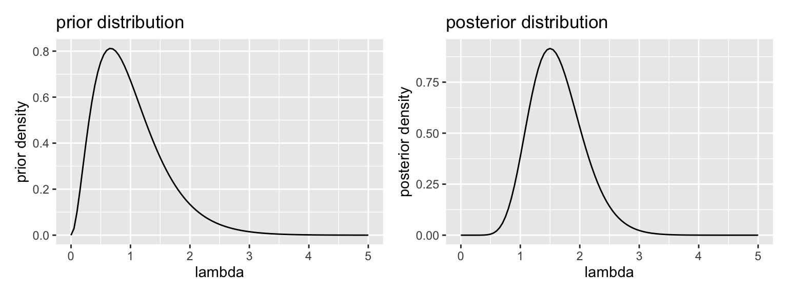

2.3 Example: Poisson Distribution
Suppose we collect \(N\) random samples \(x = \{x_1, x_2, ..., x_N\}\) and model each draw as a random variable \(X \sim \text{Poisson}(\lambda)\). Find the posterior distribution of \(\lambda\) for the gamma prior distribution. Hint: the gamma distribution is the conjugate prior for the Poisson likelihood.
\[ \begin{aligned} \text{Poisson likelihood: } f(x \mid \lambda) &= \prod_{n = 1}^N \frac{\lambda^{x_n} e^{-\lambda}}{x_n!} \\ &= \displaystyle \left[ \frac{1}{\prod_{n = 1}^N x_n !} \right]e^{-N\lambda}\lambda^{\sum_{n = 1}^N x_n} \end{aligned} \]
\[ \text{Gamma prior: } f( \lambda; \alpha^*, \beta^*) = \frac{{\beta^*}^{\alpha^*}}{\Gamma(\alpha^*)} \lambda^{\alpha^* - 1} e^{-\beta^*\lambda} \] To find the posterior, we multiply the likelihood times the prior and normalize. Because the gamma prior distribution is the conjugate prior for the Poisson likelihood, we know that the posterior will be a gamma distribution.
\[ \begin{aligned} \text{Gamma posterior: } f( \lambda \mid x) &= \frac{\left( \displaystyle \left[ \frac{1}{\prod_{n = 1}^N x_n !} \right]e^{-N\lambda}\lambda^{\sum_{n = 1}^N x_n}\right) \times \left( \left[ \frac{{\beta^*}^{\alpha^*}}{\Gamma(\alpha^*)} \right] \lambda^{\alpha^* - 1} e^{-\beta^*\lambda}\right)}{C_1} \\ \end{aligned} \] Because \(x\), \(\alpha_*\), and \(\beta\) are fixed, the terms in square brackets are constant, so we can safely consider those part of the normalizing constant.
\[ \begin{aligned} &= \frac{\left( \displaystyle e^{-N\lambda}\lambda^{\sum_{n = 1}^N x_n}\right) \times \left( \lambda^{\alpha^* - 1} e^{-\beta^*\lambda}\right)}{C_2} \\ \end{aligned} \] Now we can collect the exponents with the same base.
\[ \begin{aligned} &= \frac{\left( \lambda^{\alpha^* - 1} \times \lambda^{\sum_{n = 1}^N x_n}\right) \times \left( \displaystyle e^{-N\lambda} \times e^{-\beta^*\lambda} \right)}{C_2} \\ &= \frac{\lambda^{ \overbrace{\left[ \alpha^* + \sum_{n = 1}^N x_n \right]}^{\alpha^\prime} - 1} e^{-\overbrace{[\beta^* + N]}^{\beta^\prime}\lambda} }{C_2} \\ \end{aligned} \]
We recognize this as almost a Gamma distribution with parameters \(\alpha^\prime = \alpha^* + \sum_{n = 1}^N x_n\) and \(\beta^\prime = \beta^* + N\). Indeed, if \(\frac{1}{C_2} = \frac{{\beta^\prime}^{\alpha^\prime}}{\Gamma(\alpha^{\prime})}\), then we have exactly a gamma distribution.
\[ \begin{aligned} &= \frac{{\beta^\prime}^{\alpha^\prime}}{\Gamma(\alpha^{\prime})} \lambda^{ \alpha^\prime - 1} e^{-\beta^\prime\lambda}, \text{where } \alpha^\prime = \alpha^* + \sum_{n = 1}^N x_n \text{ and } \beta^\prime = \beta^* + N \end{aligned} \]
Like the Bernoulli likelihood with the beta prior, the Poisson likelihood withe the gamma prior gives a nice result. We start with values parameters of the gamma distribution \(\alpha = \alpha^*\) and \(\beta + \beta^*\) so that the gamma prior distribution describes our prior beliefs about the parameters \(\lambda\) of the Poisson distribution. Then we add the sum of the data \(x\) to \(\alpha^*\) and the number of samples \(N\) to \(\beta^*\) to obtain the parameters of the gamma posterior distribution.
The code below shows the posterior distribution
# set see to make reproducible
set.seed(1234)
# prior parameters
alpha_prior <- 3
beta_prior <- 3
# create an "unknown" value of lambda to estimate
lambda <- 2
# generate a data set
N <- 5 # number of samples
x <- rpois(N, lambda = lambda)
print(x) # print the data set## [1] 0 2 2 2 4# posterior parameters
alpha_posterior <- alpha_prior + sum(x)
beta_posterior <- beta_prior + N
# plot prior and posterior
gg_prior <- ggplot() + xlim(0, 5) +
stat_function(fun = dgamma, args = list(shape = alpha_prior, rate = beta_prior)) +
labs(title = "prior distribution", x = "lambda", y = "prior density")
gg_posterior <- ggplot() + xlim(0, 5) +
stat_function(fun = dgamma, args = list(shape = alpha_posterior, rate = beta_posterior)) +
labs(title = "posterior distribution", x = "lambda", y = "posterior density")
gg_prior + gg_posterior # uses patchwork package
# posterior mean: alpha/beta
alpha_posterior/beta_posterior## [1] 1.625# posterior mode: (alpha - 1)/beta for alpha > 1
(alpha_posterior - 1)/beta_posterior## [1] 1.5# 90% credible interval
qgamma(c(0.05, 0.95), alpha_posterior, beta_posterior)## [1] 0.9611973 2.4303212# 95% credible interval
qgamma(c(0.025, 0.975), alpha_posterior, beta_posterior)## [1] 0.8652441 2.6201981In the case of the posterior median, there is no closed-form solution, even though we know the form of the posterior. We can use simulation to obtain the median.
# posterior median: no closed form, so simulate
post_sims <- rgamma(1000, alpha_posterior, beta_posterior)
median(post_sims)## [1] 1.59919